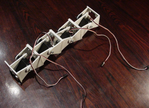
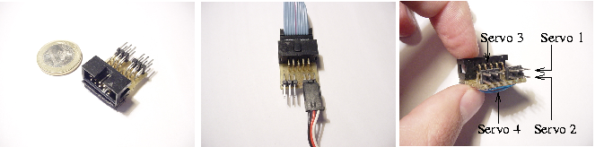
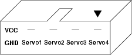
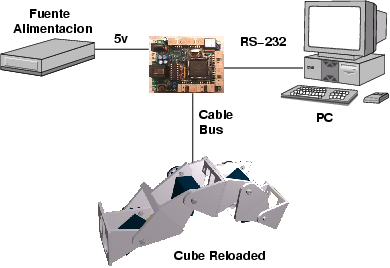
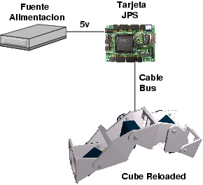

| CUBE RELOADED: ELECTRÓNICA |
| [Cableado] | [Tarjeta CT6811] | [Tarjeta JPS] |
Una vez construidos los Módulos Y1 y unidos mediante tornillos, Cube Reloaded tiene este aspecto:

Para organizar los cables y que sea mas fácil la conexión entre los servos y la electrónica, se ha construido la placa PCT-servos, que por un lado tiene un conector acodado para cable de bus y por el otro tiene unos pines para la conexión de los 4 servos. Es una placa pasiva y no se ha realizado ningún PCB.

Los pines utilizados del conector de bus se muestran en la siguiente figura. Están dispuestos de forma que se puedan conectar directamente al puerto B de la tarjeta CT6811. La alimentación de lo servos también se lleva por el propio cable de Bus.

Cube Reloaded se puede controlar usando una tarjeta CT6811, conectada a un PC a través del puerto serie (RS-232). La alimentación tanto para la electrónica como para los servos se toma de una fuente de alimentación externa (5v). Mediante un cable de bus se conecta la CT6811 con la PCT-SERVOS, situada en el interior de uno de los módulos de Cube Reloaded. El esquema se puede ver aquí:

También se puede utilizar la tarjeta JPS para el control de Cube Reloaded, lo que permite utilizar la tecnología de las FPGAs. En este caso no hay conexión con el PC, sino que hay implementado un controlador hardware, en VHDL.

En Cube Reloaded se ha elegido situar la electrónica externamente para poder controlarlo con diversas tecnologías: microcontroladores, FPGA's, PC, etc...